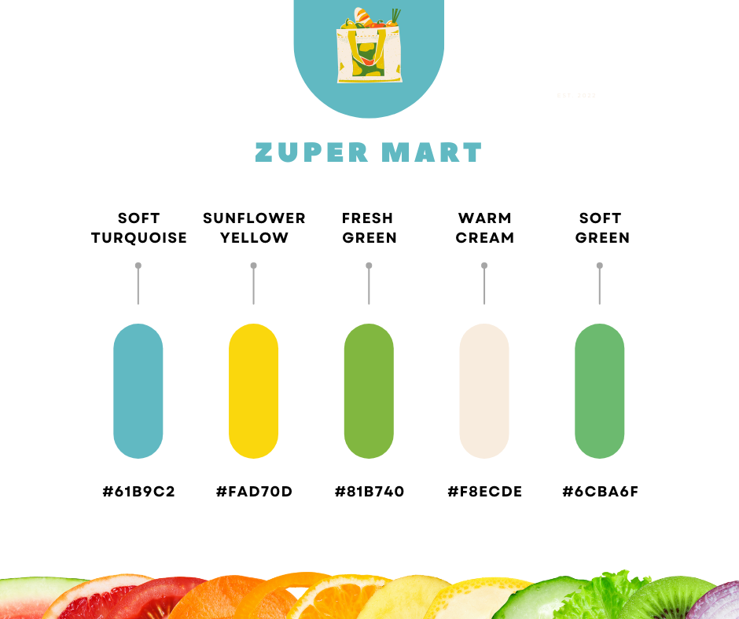

| Overview | Background |
|---|---|
| Role | Product Designer and UI/UX Designer |
| Timeline | 3 Months |
| Tools | Adobe Photoshop, Figma |
| Development | HTML, CSS, JavaScript |
| Process | Empathize, Define, Ideate, Prototype, Test |
To gain deeper insight into the challenges and expectations of people shopping at local grocery stores, I carried out qualitative research through one-on-one customer conversations. This allowed me to observe real behaviors and understand how shoppers make decisions during their grocery purchases.
Convenience-Focused Shopper
This participant values speed and simplicity when using a grocery app. They rely heavily on search and repeat-purchase features to quickly find familiar items. In real life, they want the app to reduce decision-making time by showing clear product categories, previous orders, and fast checkout. Their main frustration is having to navigate through too many screens just to complete a basic purchase.
Needs: Quick search, saved items, and a smooth, minimal checkout flow.
Price-Sensitive Shopper
This shopper carefully compares prices and looks for promotions before making a purchase. When trying new grocery products, they want clear pricing, discounts, and transparent product information. In real life, they need the app to help them stay within budget by highlighting deals, showing unit prices, and providing easy price comparisons.
Needs: Visible promotions, price comparison tools, and budget-friendly recommendations.
Quality & Trust-Driven Shopper
This participant focuses on product quality and reliability, especially when purchasing fresh or unfamiliar items. They look for reviews, product images, and detailed descriptions before deciding. In real life, they need reassurance that the product will meet expectations, particularly for fresh groceries.
Needs: Customer reviews, clear product details, freshness indicators, and reliable delivery information.
The research provided valuable insight into how customers shop for grocery products and what they expect from a grocery app, with participants consistently highlighting the importance of convenience, transparency, and trust in their purchasing decisions. Beyond speed and ease of use, users value clear and reliable information that helps them feel confident about product quality and pricing. A key takeaway from the findings is the strong opportunity to better support local products, as customers showed clear interest in locally sourced items when they are easy to find, clearly labeled, and competitively priced. By improving the visibility of local products, providing detailed information about origin and freshness, and offering more affordable pricing through partnerships with local suppliers, reduced intermediary costs, and targeted promotions, the platform can better align with customer needs, support local businesses, and deliver greater value through a more satisfying shopping experience.
To further develop and structure my ideas, I translated the research insights into a clear sitemap and user flow. These tools helped me organize content logically, define key features, and ensure that the overall structure of the app aligned with user expectations and shopping behaviors identified during the research phase.
By mapping out the user flow, I focused on reducing friction at each step of the shopping journey, from product discovery to checkout. This process allowed me to identify potential pain points early, explore alternative solutions, and design intuitive pathways that support efficiency, clarity, and ease of use while meeting both user needs and business goals.
While creating the wireframes for my grocery store mobile app, I analyzed several existing grocery and retail shopping applications to understand familiar user flows and design patterns. I closely reviewed apps such as City Mart and K-Mart to align the shopping experience with behaviors that grocery customers already expect.
During the low-fidelity prototyping phase, some of the initial ideas from my brainstorming sessions evolved differently once translated into wireframes. To validate these changes, I conducted usability testing and discussed user expectations with participants at each stage of the prototype. After the first walkthrough, I shared the original concepts behind my design decisions to gather deeper feedback and identify opportunities to refine the overall shopping experience.
Before starting the project, I discussed color preferences with the client to understand their expectations for the design direction. The client expressed openness and trusted my design judgment, allowing me the flexibility to select a color palette that best supported the product’s goals.
Based on the context of a grocery application, I recommended using shades of green as the primary color. Green naturally represents freshness, health, and sustainability key values associated with grocery shopping and food quality. It also creates a calming and trustworthy visual experience, helping users feel confident while browsing and making purchasing decisions.
This color choice guided the overall design system, influencing the interface, branding elements, and visual hierarchy to ensure a cohesive and user-friendly experience throughout the application.
Zuper Mart is an online grocery store feature that I designed to help users easily manage their past purchases and shopping routines while quickly discovering personalized recommendations and available services.
During the high-fidelity prototyping phase, I iterated on the initial wireframes based on insights from low-fidelity usability testing. Participants found the blog-style information layout overwhelming, so I redesigned the experience using preview-based graphic panels. This approach allows users to scan content quickly and dive deeper only when something interests them, resulting in a more intuitive and engaging experience.